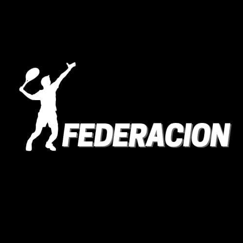
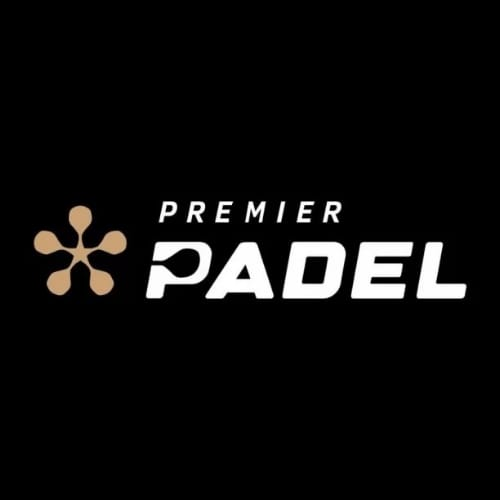

Comienza el año Federativo
Este año, desde marzo, comienza a jugarse el padel bajo las reglas de la APNP. Es el momento que la mayoría de los jugadores esperan, ya que suman puntos, hay ranking y pasajes a los nacionales representando a La Pampa.

Argentina Premier Padel
El Premier Padel vuelve a la Argentina y ya se confirmó la sede. En su tercera edición, se disputará en Mar del Plata.